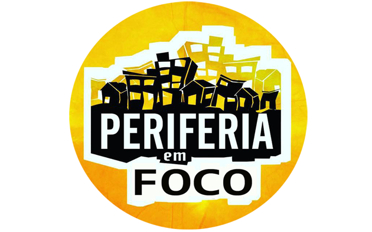
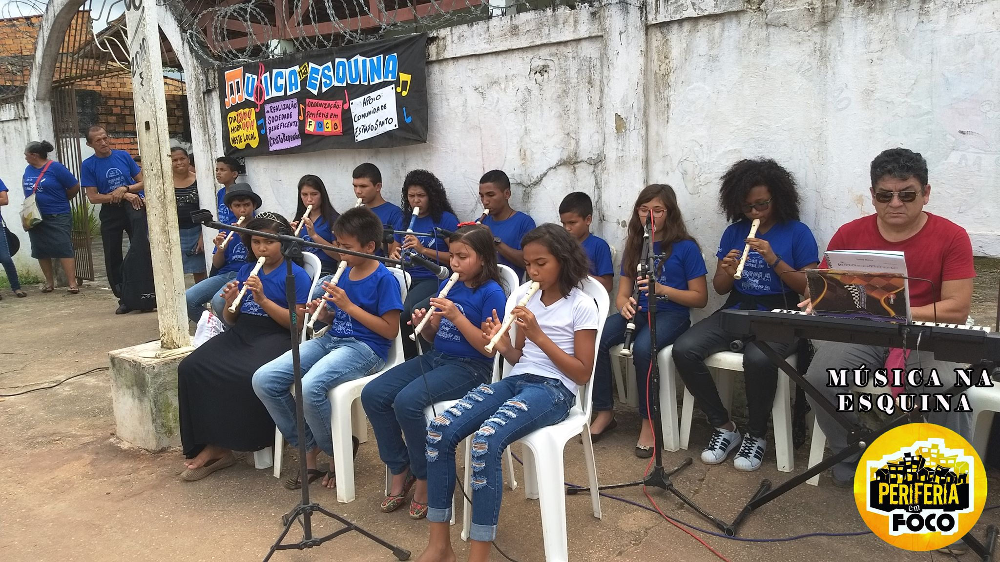
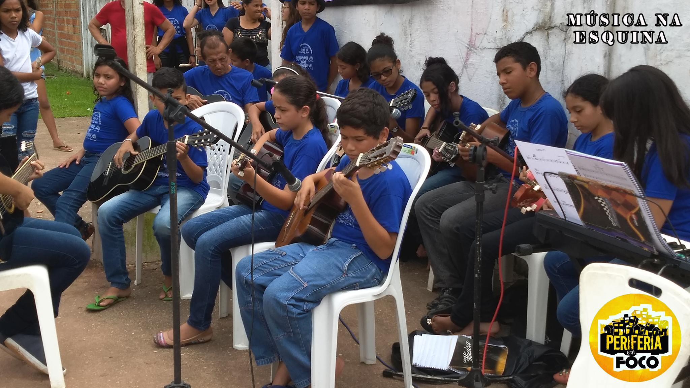
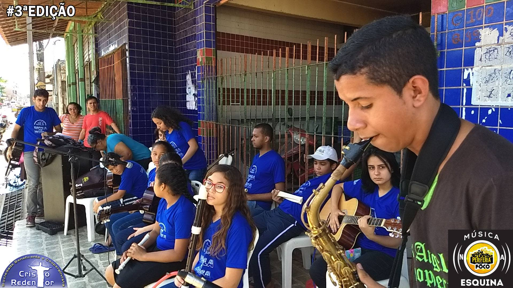

Sobre nós
O Coletivo Periferia em foco é um projeto de mídia alternativa que foi pensado como uma forma de mostrar a periferia de Belém e Região Metropolitana do Estado do Pará sem estereótipos negativos ou marginalizada. O projeto surgiu nas redes sociais, mais precisamente com uma página no Facebook. Buscamos por meio de textos, web séries, entrevistas, bate papos, roda de conversa e palestras ser “a voz da periferia nas redes sociais”. Essa voz nada mais é do que mostrar o lado bom da vida cotidiana dos moradores desses locais e constituir desta forma um coletivo que viabilize a autovalorização dessa população e desmistificação da “cultura da violência” muito presente na periferia.
Ações


